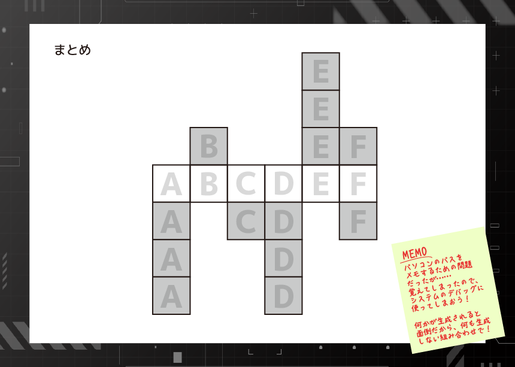
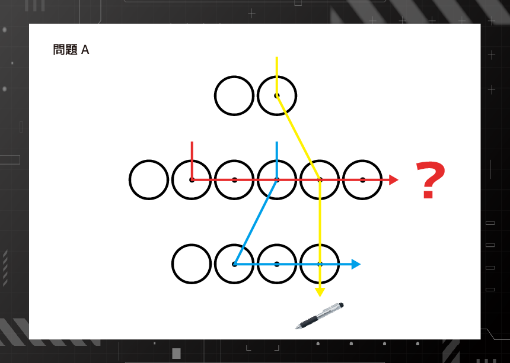
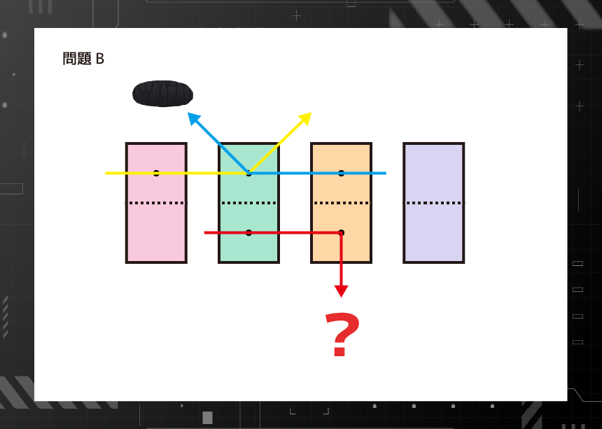
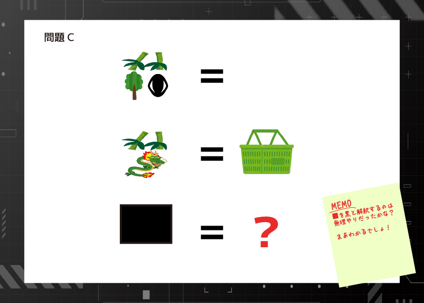
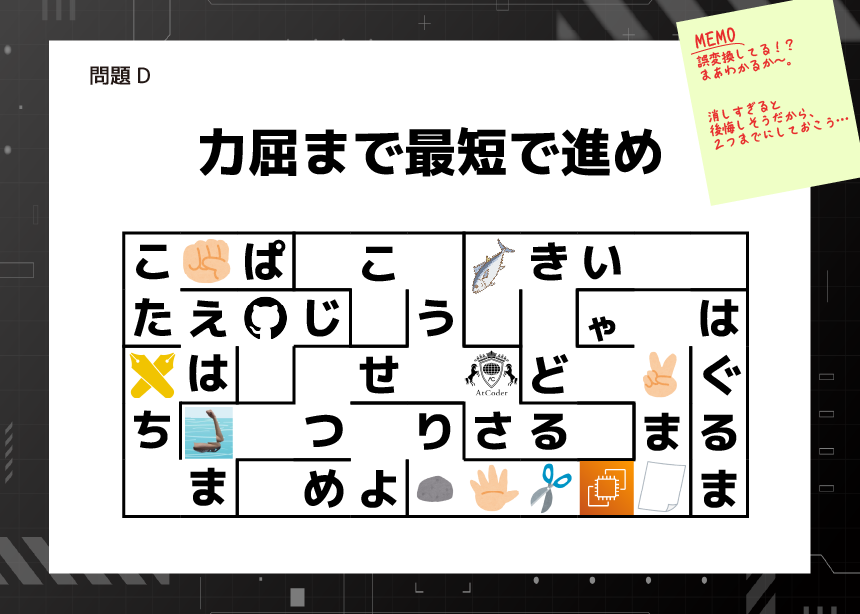
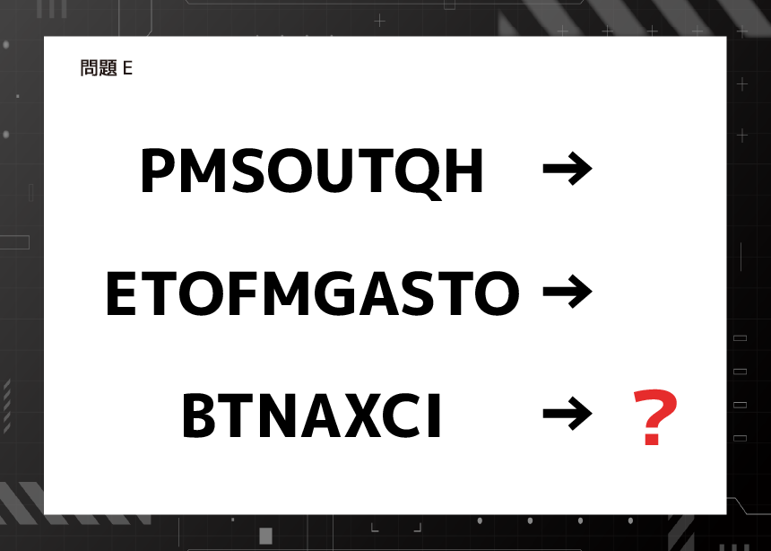
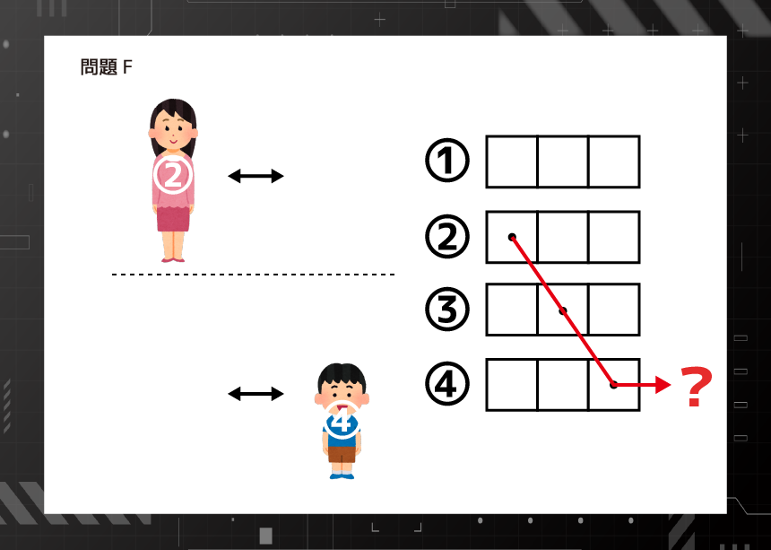
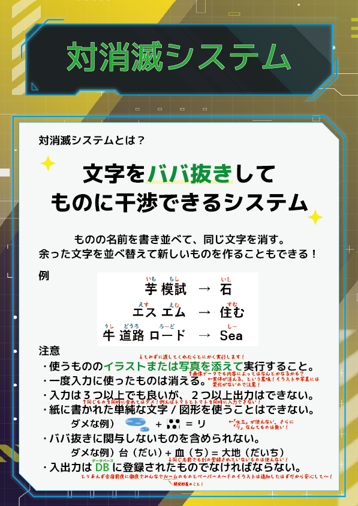

あなたは事件を解決し、報告書を提出した。
しかし、開発者が対消滅システムを削除する前、あなた達はふと思う。
「もし自分たちがパソコンを出力すればどうなるのか？」
そう思ったあなた達はパソコンを生成した。
データにアクセスするには、次の謎を解く必要があるようだ。
ADDITIONAL PROBLEM
あなたは事件を解決し、報告書を提出した。
しかし、開発者が対消滅システムを削除する前、あなた達はふと思う。
「もし自分たちがパソコンを出力すればどうなるのか？」
そう思ったあなた達はパソコンを生成した。
データにアクセスするには、次の謎を解く必要があるようだ。
画像をタップすると拡大して見られます。







